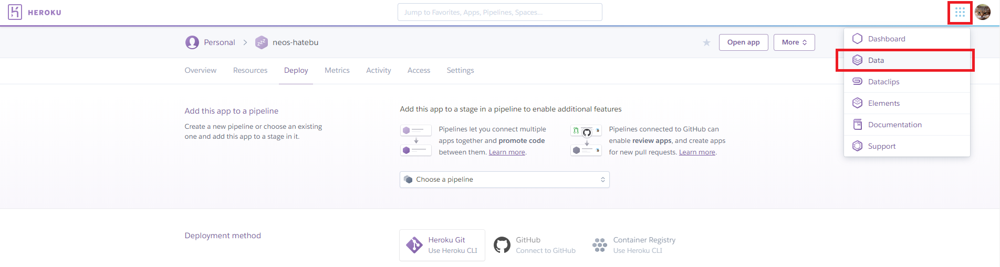
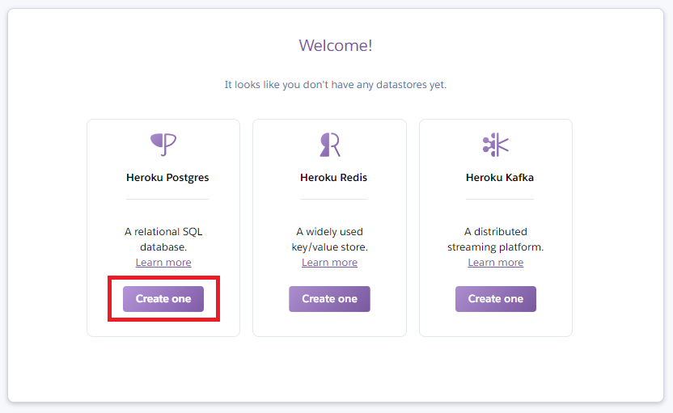
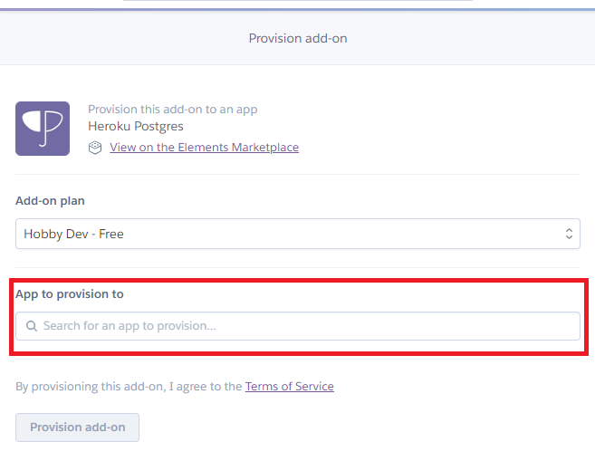
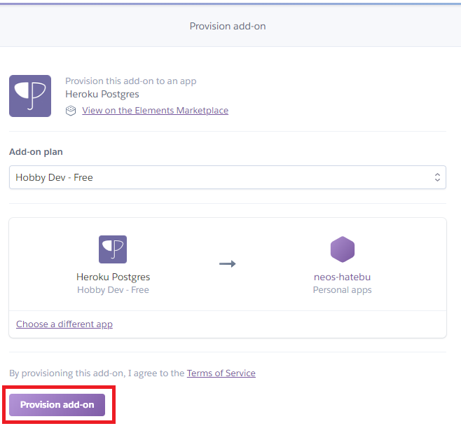
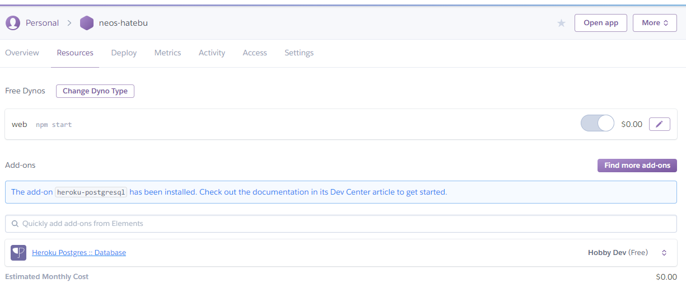
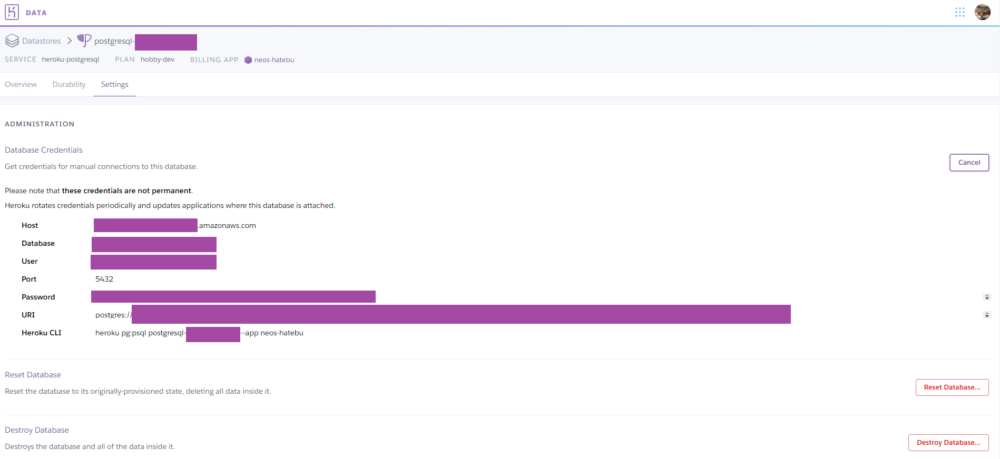
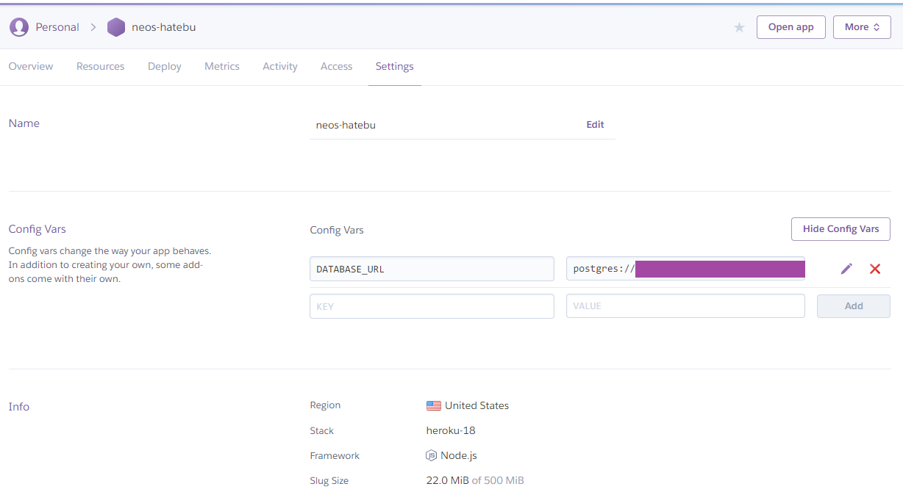

Heroku アプリに PostgreSQL を導入する
最近 Heroku いじりを始めて、サーバサイドにも触れる機会ができた。サーバサイドといったら DB 使ってデータ永続化でしょ、ということで、今回は Heroku アプリに PostgreSQL を導入してみる。
- 参考 : Heroku Postgres | Heroku Dev Center … 公式のリファレンス
目次
- Heroku Postgres は無料で使える
- Web ダッシュボードから PostgreSQL を導入する
- Heroku Postgres の状況確認
- Heroku Postgres に接続する
- このあとやりたいこと
Heroku Postgres は無料で使える
Heroku の PostgreSQL、公式サイトでは Heroku Postgres と表記されているが、コチラは無料利用も可能だ。無料枠である hobby-dev プランでは、全部で1万行のデータまでというデータ容量制限があったり、メモリキャッシュができないなど、Web サービスを本運用するには難しい制限がかかっているが、個人の開発用途なら十分であろう。
プランの詳細はコチラに記載アリ。
Web ダッシュボードから PostgreSQL を導入する
今回は試しに、Heroku の Web 上のダッシュボード (管理画面) から PostgreSQL を導入してみた。
PostgreSQL を導入したい Heroku アプリのダッシュボードに行き、右上のメニューから「Data」を選び、「Heroku Postgres」を選択してインストールする。





…コレだけ。すごい、メチャクチャ簡単に DB もらえた。
Heroku CLI から PostgreSQL を導入する
今回試さなかったが、Heroku CLI からも同様のインストール作業ができるようだ。
$ heroku addons:create heroku-postgresql:hobby-dev
PostgreSQL は「Addon」としてインストールするようだ。
Heroku Postgres の状況確認
PostgreSQL をインストールすると、heroku pg コマンドで Heroku Postgres を操作できるようになる。自分のローカル開発環境には既に PostgreSQL をインストールしていたので分からなかったのだが、もしかしたらローカル環境に PostgreSQL をインストールしておかないといけないかもしれない。
インストールした PostgreSQL の状況は以下のように確認できる。
$ heroku pg:info
=== DATABASE_URL
Plan: Hobby-dev
Status: Available
Connections: 0/20
PG Version: 10.5
Created: 2018-11-06 13:43 UTC
Data Size: 7.6 MB
Tables: 0
Rows: 0/10000 (In compliance)
Fork/Follow: Unsupported
Rollback: Unsupported
Continuous Protection: Off
Add-on: postgresql-globular-28873
hobby-dev プラン (無料枠) で、Status は Available (有効) なようである。
Web 上の管理画面では、接続情報が確認できる。

また、アプリケーションから DB 接続するための接続文字列が、環境変数 DATABASE_URL として自動的に追加されていた。

Heroku Postgres に接続する
Heroku Postgres にコンソールからアクセスして、直接 SELECT 文や INSERT 文を流したりもできる。通常の PostgreSQL で使用する psql コマンドの代わりに、heroku pg:psql コマンドで接続できる。
$ heroku pg:psql
--> Connecting to postgresql-globular-28873
違いが分からなかったのだが、$ heroku psql コマンドでも接続できた。
このあとやりたいこと
Heroku アプリで PostgreSQL が使えるようになったワケだが、このままではまだ開発がやりづらい。まずはローカル開発環境にも同等の PostgreSQL 環境が欲しい。
そして、Node.js で PostgreSQL に接続してみたいと思う。まずは公式のリファレンスにもある pg パッケージを使って操作してみたい。
さらに、ローカルの PostgreSQL と、Heroku Postgres との接続情報を、環境変数で切り替えられるようにしたい。
以降、このあたりを整理してやっていこうと思う。